Tape service — clickable mockups
The sermon text follows the tape. These are design mockups for Born Again (not built yet). The interactive ones run a pretend tape at 12× speed: press Play (or Space), click a paragraph to jump, switch the theme. All text is public-domain Bible text; there is no sermon text and no audio.
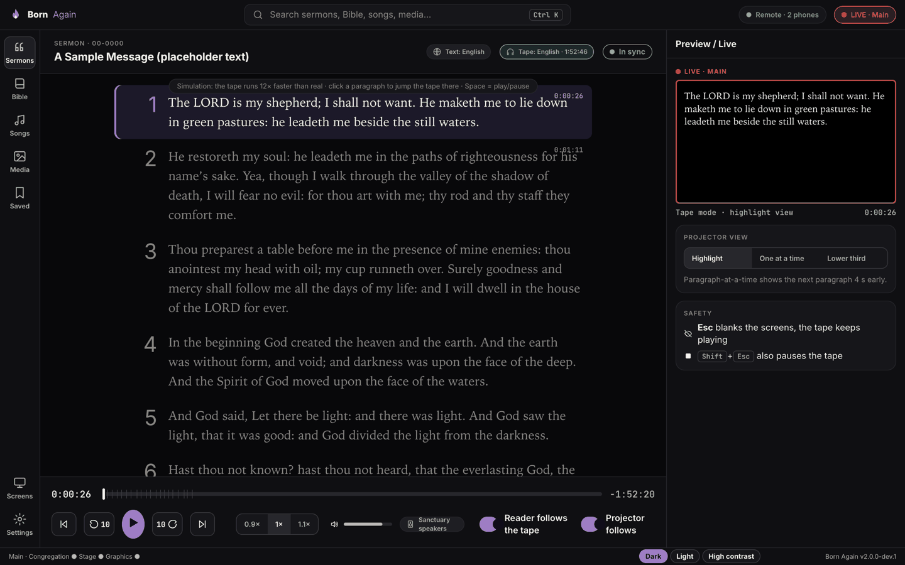
The reader highlights the paragraph being spoken and glides to it. Click any paragraph to jump the tape; Space plays/pauses; the "Reader follows" switch frees you to browse without losing your place. Dark / light / high-contrast.
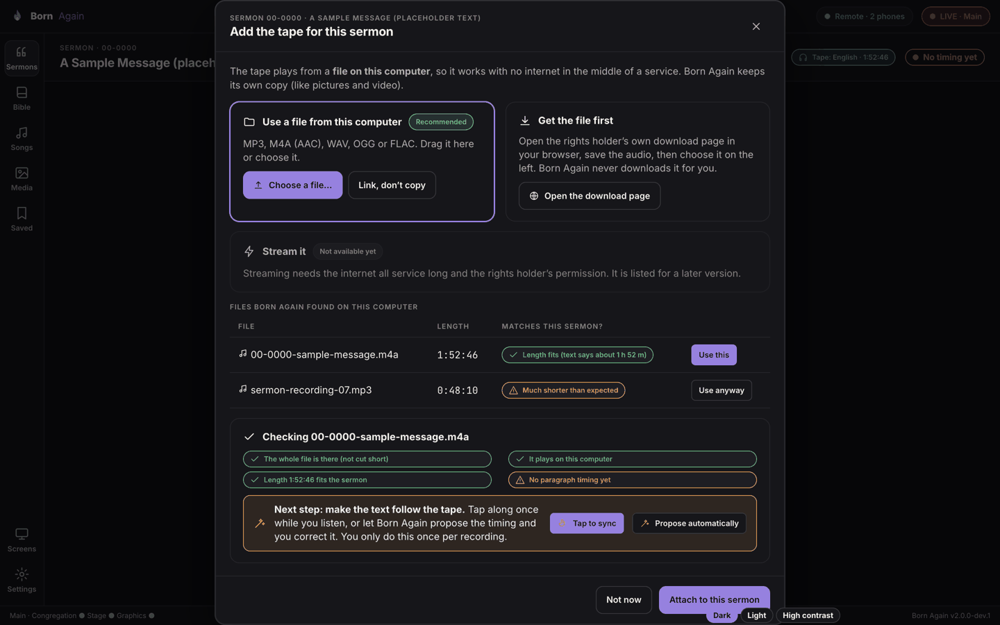
The "Play options" equivalent: a file on this computer (recommended), get the file first, streaming (not yet), and a plain preflight of the chosen file.
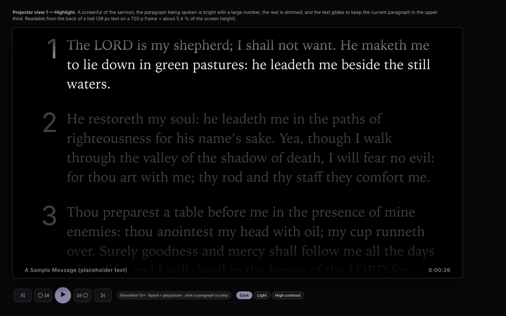
A screenful of text, current paragraph bright with a large number, the rest dimmed, auto-scrolling. Themes switchable.
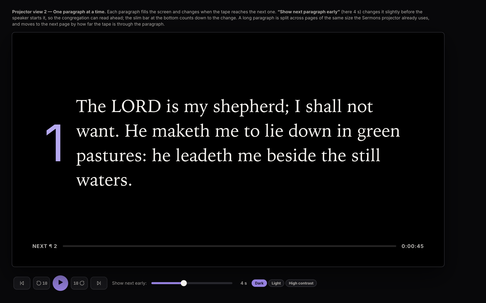
Auto-advance with the "show next early" lead and a countdown bar.
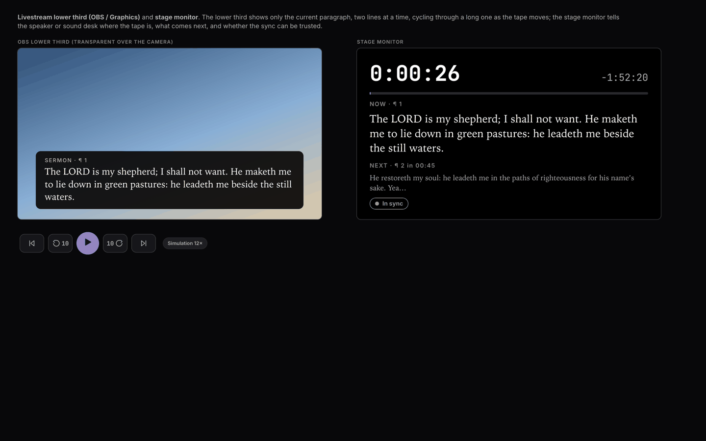
The livestream lower third and the stage monitor with time, now/next and the sync pill.
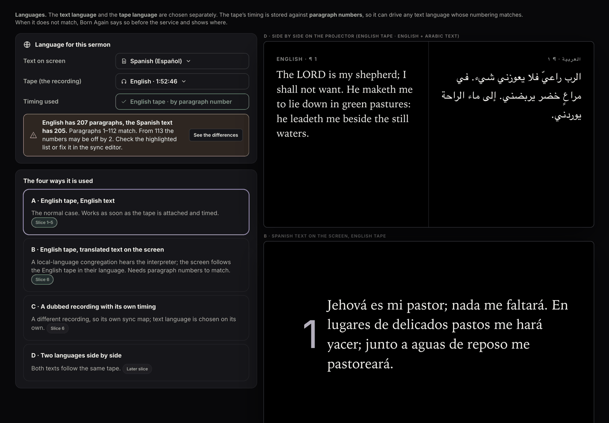
Text vs tape language, English tape with translated text, mismatch warning, and side-by-side two-language projection (including right-to-left).
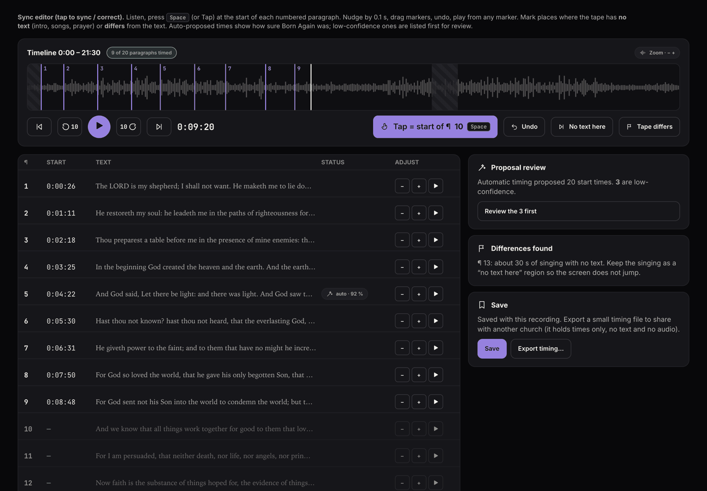
Tap to sync with a timeline: press Space while the demo plays to place the next marker; undo; nudge; "no text here"; "tape differs"; review of low-confidence proposals.
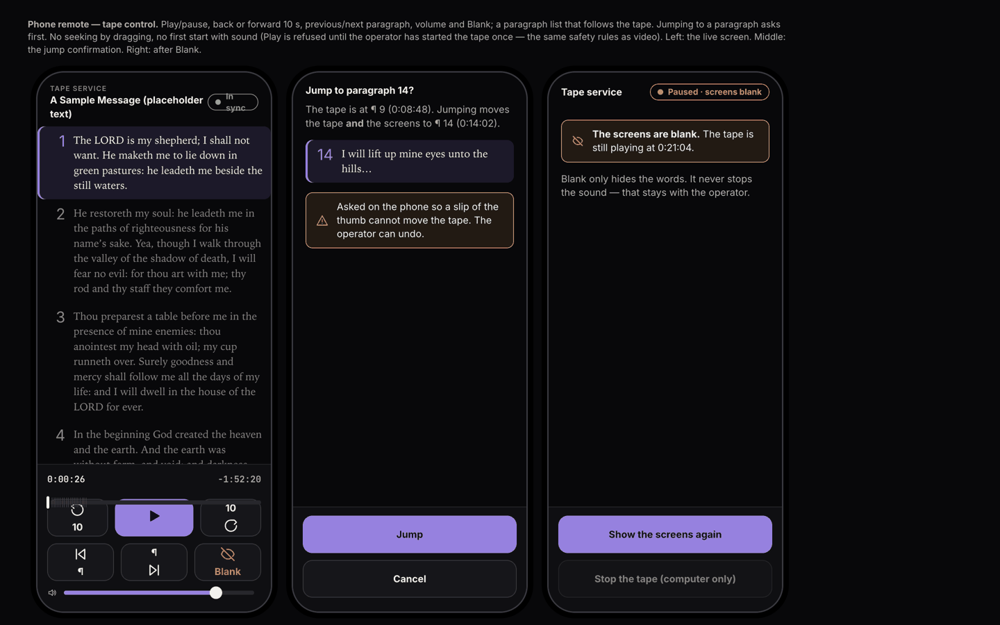
Tape controls with a paragraph list that follows; a confirmation before jumping; the screen after Blank.
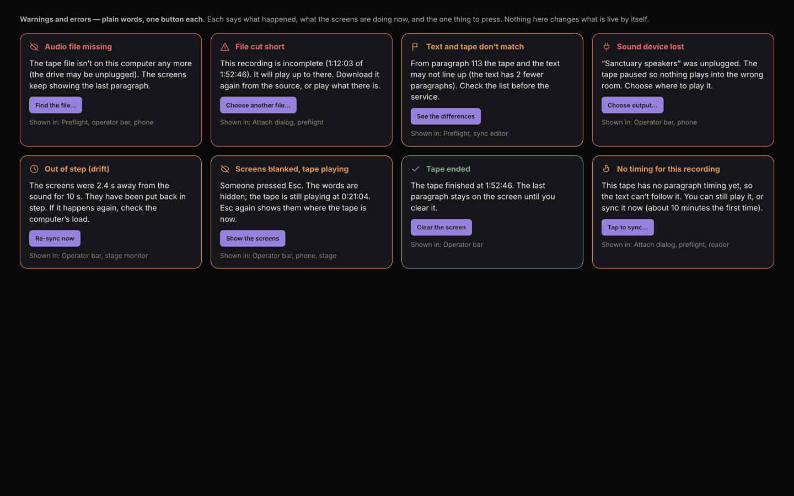
Eight situations, each in plain words with one button.
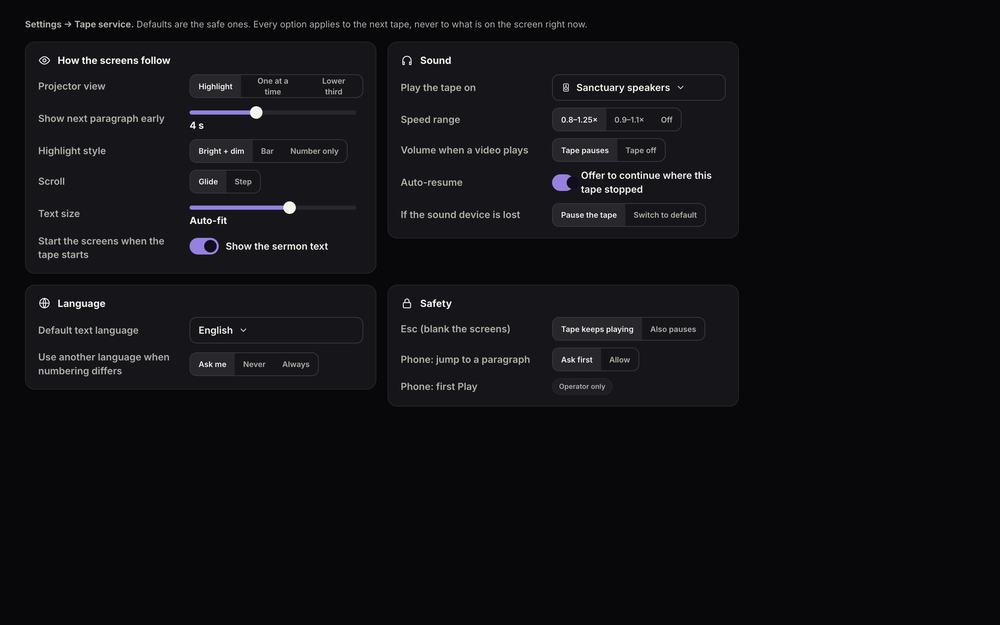
Lead time, follow style, highlight style, speed range, output device, auto-resume, safety.
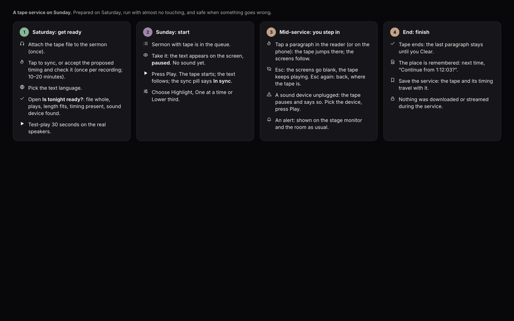
Before the service, start, mid-service, end.